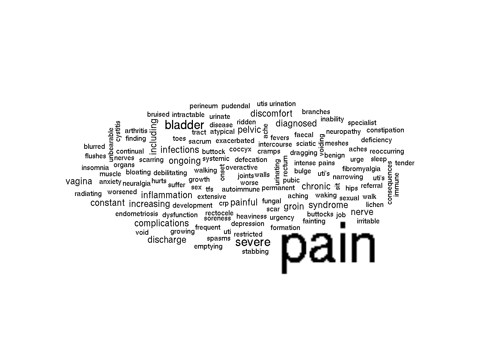

Testing for statistical significance between pelvic mesh reports and other reports to identify a potential signal that could have been used to recall pelvic mesh devices prior to the 2018 recall.
First we look at mentions of pain in pelvic mesh devices and hernia mesh devices. We construct a contingency table counting the number of reports that have mentions of the word `pain’ for both devices.
## pain no pain
## pelvic 70 34
## hernia 4 44We use Fisher’s exact test to test the null hypothesis that the odds ratio is equal to one for
\[ Odds Ratio = \frac{Pain_P / NoPain_P}{Pain_H / NoPain_H}\]
##
## Fisher's Exact Test for Count Data
##
## data: pain_table
## p-value = 3.128e-12
## alternative hypothesis: true odds ratio is not equal to 1
## 95 percent confidence interval:
## 7.22406 91.67797
## sample estimates:
## odds ratio
## 22.14368We reject the null hypothesis that the odds ratio is equal to one \(\left(p = 3e-12\right)\), with a \(95\%\) confidence interval of \((7.22, 91.7)\). The odds ratio can be interpreted as how many times greater the ratio of pain to no pain documents is between pelvic mesh and hernia mesh devices is.
## pain no pain
## pelvic 70 34
## other 1278 13790##
## Fisher's Exact Test for Count Data
##
## data: pain_table
## p-value < 2.2e-16
## alternative hypothesis: true odds ratio is not equal to 1
## 95 percent confidence interval:
## 14.47034 34.65872
## sample estimates:
## odds ratio
## 22.20954We can do the same thing but looking at a `pain’ topic.
As a start, I’ve picked the below topic, and set a threshold of \(0.05\) to indicate its presence in a document.

## pain threshold no pain threshold
## pelvic 85 92
## hernia 2 55##
## Fisher's Exact Test for Count Data
##
## data: pain_table
## p-value = 3.883e-11
## alternative hypothesis: true odds ratio is not equal to 1
## 95 percent confidence interval:
## 6.300206 218.558317
## sample estimates:
## odds ratio
## 25.16453## pain threshold no pain threshold
## pelvic 48 56
## other 100 14968##
## Fisher's Exact Test for Count Data
##
## data: pain_table
## p-value < 2.2e-16
## alternative hypothesis: true odds ratio is not equal to 1
## 95 percent confidence interval:
## 81.0544 203.0168
## sample estimates:
## odds ratio
## 127.6897## time nA nB nC nD event
## 1 2012-01-01 3 4 0 2 3
## 2 2013-01-01 3 10 0 9 3
## 3 2014-01-01 16 9 2 19 16
## 4 2015-01-01 1 1 0 4 1
## 5 2016-01-01 9 3 0 6 9
## 6 2017-01-01 38 7 2 4 38## test_name analysis_of run_status
## 1 Proportional Reporting Ratio NA TRUE
## 2 x-bar Western Electric Rule 1 NA TRUE
## 3 x-bar Western Electric Rule 2 NA TRUE
## 4 Poisson Rare NA FALSE
## 5 BCPNN NA TRUE
## run_msg ref_time_start ref_time_end
## 1 Success 2017-01-01 2017-01-01
## 2 Success 2012-01-01 2017-01-01
## 3 Success 2012-01-01 2017-01-01
## 4 Minimum zero_rate of 0.666666666666667 not met 2012-01-01 2017-01-01
## 5 Success 2017-01-01 2017-01-01
## eval_period test_hyp test_params signal
## 1 1 Two-sided test at alpha=0.05 of PRR > 1 1, 0.05, 0 FALSE
## 2 6 1 point > 3-sigma limit 0.333333.... TRUE
## 3 6 2 of 3 points > 2-sigma limit 0.333333.... FALSE
## 4 6 Poisson test p-value <=0.05 0.666666.... NA
## 5 1 5% quantile of the posterior distribution > 1 1, 0.9, 0 FALSE
## signal_threshold stat stat_lcl stat_ucl p_value
## 1 0.05 2.533333.... 0.811413.... 7.909375.... 0.1095525
## 2 30.32812.... 3.961864.... -9.23275.... 22.03275.... NA
## 3 22.35208.... -0.67702.... -9.23275.... 22.03275.... NA
## 4 NA NA NA NA NA
## 5 1 1.158914.... 0.864024.... 1.554450.... 0.2043595
## stat_addtl
## 1 1.787619....
## 2 6.4, 7.9....
## 3 6.4, 7.9....
## 4 NA
## 5 c(0.8640....## time nA nB nC nD event
## 1 2012-01-01 3 4 0 2 3
## 2 2013-01-01 3 10 1 8 3
## 3 2014-01-01 20 5 3 18 20
## 4 2015-01-01 1 1 2 2 1
## 5 2016-01-01 9 3 1 5 9
## 6 2017-01-01 41 4 1 5 41## test_name analysis_of run_status
## 1 Proportional Reporting Ratio NA TRUE
## 2 x-bar Western Electric Rule 1 NA TRUE
## 3 x-bar Western Electric Rule 2 NA TRUE
## 4 Poisson Rare NA FALSE
## 5 BCPNN NA TRUE
## run_msg ref_time_start ref_time_end
## 1 Success 2017-01-01 2017-01-01
## 2 Success 2012-01-01 2017-01-01
## 3 Success 2012-01-01 2017-01-01
## 4 Minimum zero_rate of 0.666666666666667 not met 2012-01-01 2017-01-01
## 5 Success 2017-01-01 2017-01-01
## eval_period test_hyp test_params signal
## 1 1 Two-sided test at alpha=0.05 of PRR > 1 1, 0.05, 0 FALSE
## 2 6 1 point > 3-sigma limit 0.333333.... TRUE
## 3 6 2 of 3 points > 2-sigma limit 0.333333.... FALSE
## 4 6 Poisson test p-value <=0.05 0.666666.... NA
## 5 1 5% quantile of the posterior distribution > 1 1, 0.9, 0 FALSE
## signal_threshold stat stat_lcl stat_ucl p_value
## 1 0.05 5.466666.... 0.911329.... 32.79214.... 0.06311466
## 2 36.44548.... 3.467201.... -11.9067.... 26.30670.... NA
## 3 26.69699.... -0.63599.... -11.9067.... 26.30670.... NA
## 4 NA NA NA NA NA
## 5 1 1.206974.... 0.928212.... 1.569455.... 0.11934633
## stat_addtl
## 1 2.494423....
## 2 7.2, 9.7....
## 3 7.2, 9.7....
## 4 NA
## 5 c(0.9282....## time nA nB nC nD event
## 1 2012-01-01 3 4 121 944 3
## 2 2013-01-01 3 10 235 2244 3
## 3 2014-01-01 20 5 436 2711 20
## 4 2015-01-01 1 1 250 2323 1
## 5 2016-01-01 9 3 240 2443 9
## 6 2017-01-01 41 4 303 2818 41## test_name analysis_of run_status
## 1 Proportional Reporting Ratio NA TRUE
## 2 x-bar Western Electric Rule 1 NA TRUE
## 3 x-bar Western Electric Rule 2 NA TRUE
## 4 Poisson Rare NA FALSE
## 5 BCPNN NA TRUE
## run_msg ref_time_start ref_time_end
## 1 Success 2017-01-01 2017-01-01
## 2 Success 2012-01-01 2017-01-01
## 3 Success 2012-01-01 2017-01-01
## 4 Minimum zero_rate of 0.666666666666667 not met 2012-01-01 2017-01-01
## 5 Success 2017-01-01 2017-01-01
## eval_period test_hyp test_params signal
## 1 1 Two-sided test at alpha=0.05 of PRR > 1 1, 0.05, 0 TRUE
## 2 6 1 point > 3-sigma limit 0.333333.... TRUE
## 3 6 2 of 3 points > 2-sigma limit 0.333333.... FALSE
## 4 6 Poisson test p-value <=0.05 0.666666.... NA
## 5 1 5% quantile of the posterior distribution > 1 1, 0.9, 0 TRUE
## signal_threshold stat stat_lcl stat_ucl p_value
## 1 0.05 9.384745.... 8.153601.... 10.80178.... 8.526387e-214
## 2 36.44548.... 3.467201.... -11.9067.... 26.30670.... NA
## 3 26.69699.... -0.63599.... -11.9067.... 26.30670.... NA
## 4 NA NA NA NA NA
## 5 1 16.54627.... 9.833770.... 27.84070.... 3.636984e-19
## stat_addtl
## 1 1.074385....
## 2 7.2, 9.7....
## 3 7.2, 9.7....
## 4 NA
## 5 c(9.8337....